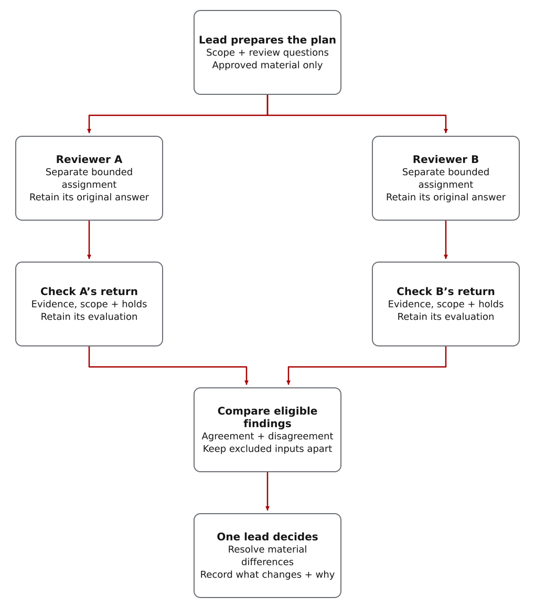

Plan retries without creating duplicate jobs
Illustrative planning example · authored findings, not live model responses
The request: make a job-submission client recover from timeouts, while ensuring that one user request cannot create two jobs. The copy-ready Prompt Coach request sizes the work and asks for two separate second opinions before implementation.
Initial plan from the coordinating model
“After a timeout, retry the submission up to twice.”
The hidden assumption: no reply means no job was created. If the server committed the job but its reply was lost, that assumption fails.
Give two reviewers the same starting brief
Each receives the requirement, initial plan, known API behavior and open questions—but not the other reviewer’s conclusions. The following findings are authored to explain the workflow; they do not claim that either model was called.
- Cloud second opinion: challenge the design
- A Claude Opus reviewer could flag the lost-reply case: the server may already have created the job. Ask for the server guarantee or a test that makes repeated submissions create only one job.
- Local vLLM second opinion: challenge recovery
- A configured open-weight reviewer could ask whether the client keeps the same request identifier after a restart. A newly generated identifier could defeat duplicate protection. Add that as a requirement to investigate, not a verified service fact.
Synthesize findings into decisions, not a vote
- Change the plan: remove unconditional retries. The scripted retry-and-effect-count exercise shows why this assumption needs a check; it does not establish your API’s behavior.
- Keep an open question: does this server recognize repeated submissions with the same identifier, and what happens when the payload changes or the identifier expires? No reviewer’s confidence can answer that without evidence.
- Add validation: test a lost reply, a repeated submission and a client restart. Count created jobs, not just successful client responses. The restart finding is a proposed new test, not a claim that the existing exercise covers it.
The revised work plan
- Check the server contract first. Verify whether a stable request identifier actually prevents duplicate jobs. Record the guarantee, its limits and the evidence.
- Choose the retry policy from that result. If the guarantee is established, plan to save the identifier before the first send and reuse it across retries and restarts. If it is not, do not automatically resubmit an unknown-outcome request; plan how to report and check its status.
- Implement and test the chosen behavior. Give the implementation task the accepted conditions and failure tests. Review the result before enabling retries.
What changed: two second opinions turned a retry count into a design decision, a prerequisite investigation and concrete tests. Save the original proposal, evaluated findings, reasons for each decision and revised tasks in Beads and project files. Unresolved server behavior blocks the dependent retry implementation, not unrelated authorized work.
In a real run, outside and local reviews require their own opt-in, available routes and response checks. Evaluate each return before synthesis; preserve missing or rejected reviews and any mandatory holds. More models do not guarantee better answers. See which inputs may support a decision and how to assign outside reviews.
Use different models to challenge the same assumptions
Bring an approved local vLLM reviewer and a cloud specialist to the same question. Preserve their independent findings, then check which evidence changes the decision. Eligible local reviews can support the final project decision directly; local does not mean automatically trusted. Configure the local-review path.
The lead is usually the coordinating Codex agent. It may accept routine results only within your granted authority. Decisions reserved to you, or requiring human adjudication under the task or policy, stay with a human. The agent can prepare evidence and record that decision; it cannot approve it for you.
Reviewers can notice different problems: an unclear setup step, an unsafe permission assumption or an untested failure case. Give each a specific question and preserve its findings before showing it other reviews.
A return is a reviewer’s answer and supporting evidence. Check each return before combining it. A useful observation may still rest on missing context, unsupported evidence or actions the reviewer was not allowed to take.
From separate reviews to a recorded decision
Local and cloud reviewers contribute to the same project decision process, using route-specific checks.

Read the diagram as text
- The lead prepares the plan, approved material and separate review questions. Reviewer A and reviewer B receive distinct bounded assignments through their permitted routes; the branches do not imply simultaneous execution or statistical independence.
- Retain each original answer and evaluate it separately for evidence, scope and required holds. Keep each evaluation with the matching return; do not combine unchecked text into an accepted answer.
- Compare eligible findings, retaining agreement, disagreement and assumptions. Held or excluded returns remain separate and are not silently promoted. The comparison helper must be explicitly invoked when required; dispatch does not automatically perform synthesis.
- One lead resolves material differences using source checks or tests and records what changes and why. A review, agreement or passing comparison does not grant new implementation, spending, sharing or publication permission.
- Assign: give each reviewer a focused question and approved material; preserve its findings before sharing the other reviews.
- Evaluate each return: check its evidence, quality, permitted actions and applicable response contract.
- Classify and compare: identify reviews that may be used, must wait for further review or must be excluded. When structured comparison is needed, explicitly invoke the comparison API with compatible claim fields.
- Investigate and decide: check material disagreements against implementation or tests, then retain the lead’s decision and resulting work. The architect decides within the granted authority.
Neither input eligibility nor model agreement establishes correctness or permission to act.
Decide which reviews can support the decision
Individual returns go through the return evaluator. Cross-return eligibility and claim comparison are available through evaluate_synthesis_inputs; the operator or integration must invoke this helper explicitly. A route flag requiring comparison is not evidence that it ran.
CWO records a status for each review before combining findings: accepted, accepted-with-modification, salvage-only, open-risk, missing, timed-out, process-held, rejected, quarantined or boundary-tainted. These exact labels distinguish usable evidence from missing, limited or unsafe inputs.
provider_camp from provider_family.
A boundary-tainted review used material or actions outside its approved assignment—for example, claiming to inspect files that were not shared. Do not blend it into accepted evidence. Reject it or isolate it for review before deciding whether any finding is usable.
Keep disclosed provider-policy limits with the review. If provider conflict requires peer review, hold implementation until that review and the lead’s decision are recorded. The evaluator marks this implementation_blocked; a pending review is not the same as a substantively unsafe return. See provider-policy handling.
For security-sensitive decisions, CWO can require comparison of explicit claims across trust domains. A trust domain groups sources that may share the same provider or operating assumptions; it is not proof of statistical independence. Unresolved material differences must be decided before findings become implementation work.
Example: conflicting retry recommendations
One reviewer recommends retrying a failed job submission. Another warns that the server may have created the job before its reply was lost. Record the competing assumptions, then check whether repeated submissions can create duplicate jobs. The number of reviewers backing either design cannot settle that service behavior.
Record what was accepted and why
Save the agreements, disagreements, unsupported claims and missing reviews. For each material finding, record the supporting evidence, the lead’s decision and any resulting plan change. Keep provider identity and unresolved holds with that record; the summary does not authorize release.
- The combined review summary reports findings; the lead makes the decision.
- Outside models provide evidence; they do not gain authority.
- Research claims need source locators, citation spans or excerpts, contradiction handling, and reflection before they become usable synthesis input.
- Zero-trust consensus reports where claims from separately counted sources disagree; agreement is not validation.
- Accepted findings become plan changes only after architect adjudication.
- Process-held findings stay visible as open-risk evidence until peer review or architect adjudication resolves the hold.
- Keep rejected findings and findings held apart for investigation in the record, including why they were excluded.
When To Use It
Use synthesis for high-risk architecture, security-sensitive planning, publication work, provider-conflict review, airgapped model substitution choices, or any task where independent critiques are expected to materially improve the plan. Do not use it for narrow edits where one Beads task and focused validation are enough.
Continue with the multi-expert review flow, use Zero-Trust Consensus when structured cross-domain claim comparison is needed, or use Reference for exact executor IDs and helper commands.